Natural wonders are the polar opposite of man-made structures. The surrounding all living and non-living entities that exist naturally, which means that they are not created artificially; while developing its form overtime to produce an spectacular panoramic view over the horizon. The phrase is most commonly used to refer to the Earth or sections of the Earth. The interplay of all living species, climate, weather, and natural resources that impact human success and economic activity throughout time is referred to as the atmosphere. Thus, in concept, it might generate marvelous things out of nothing, resulting in what we now refer to as the natural wonders of the world.
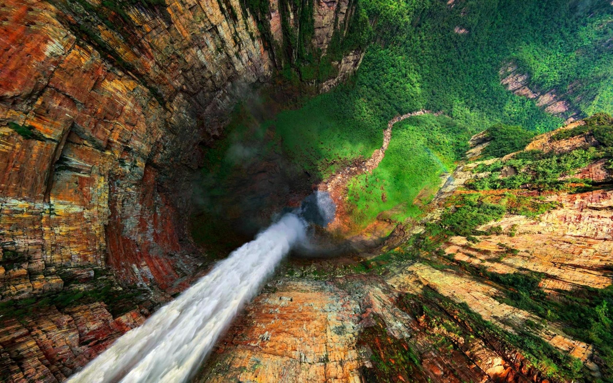Angel Falls is indeed the tallest waterfall in the world. Salto Angel is its Spanish name, and it plummets from a height of 3230 feet with an unbroken plunge of an amazing 2647 feet. Angel Falls is the world's tallest continuous waterfall. The waterfall falls from a crack at the peak of table top mountain Auyan-tepu into Devil's Canyon, 3212 feet below, in Canaima National Park, Venezuela's second biggest national park. The falls are a tributary of Venezuela's Orinoco River system's Carrao River. Angel Falls, one of the world's most spectacular natural marvels, is a truly breathtaking scene.
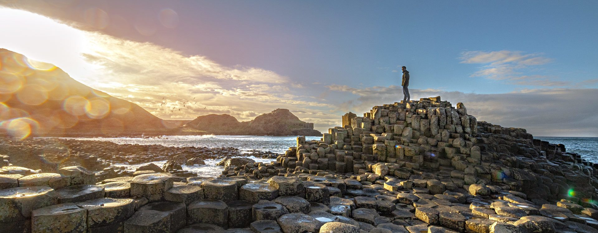The Giant's Causeway is located in The northern part of Ireland at the foot of the basalt cliffs along the sea coast on the edge of the Antrim plateau. It is made up of 40,000 huge black basalt columns that protrude from the sea. Legends of giants marching over the sea to Scotland have been inspired by the stunning sight. Geological investigations of these rocks over the last 300 years have considerably contributed to the advancement of the earth sciences, demonstrating that this stunning landscape was produced by Tertiary volcanic activity 50–60 million years ago.
The structure's accessible array of unusual geological exposures and polygonal columnar structures produced roughly 60 million years ago make it a "classic site" for basaltic volcanism research. The characteristics of the Giant's Causeway and Causeway Coast site, particularly various strata revealed in the cliff faces, has played an important role in defining our knowledge of the sequences of activity in Earth's geological history.
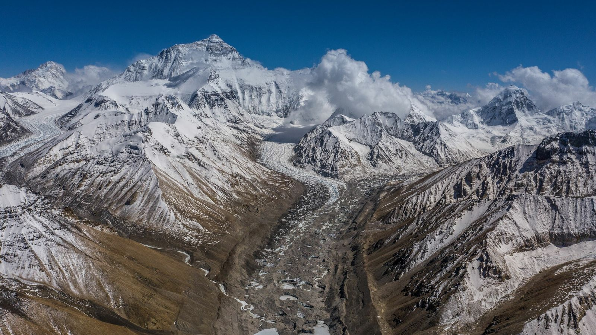Mount Everest is a high summit in the Himalayan range. It is situated between Nepal and Tibet, a Chinese autonomous area. It is the highest point on Earth, standing at 8,849 meters (29,032 ft). The peak was named after George Everest, a former Surveyor General of India, in the eighteenth century. The Tibetan name is Chomolungma, which means "World Mother Goddess," while the Nepali name is Sagarmatha, which has several meanings.
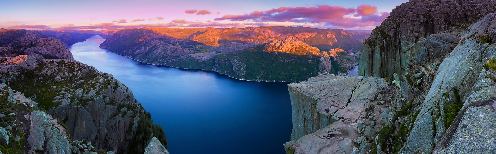Pulpit Rock, also known as Preikestolen in Norwegian, is a renowned tourist site in Norway. Lonely Planet describes Pulpit Rock as "one of the world's most stunning viewing sites," and it frequently appears at the top of lists of natural marvels throughout the world. It's a 25m squared mountain platform nestled atop the Lysefjord that serves as an observation point and has been attracting people for over a century.
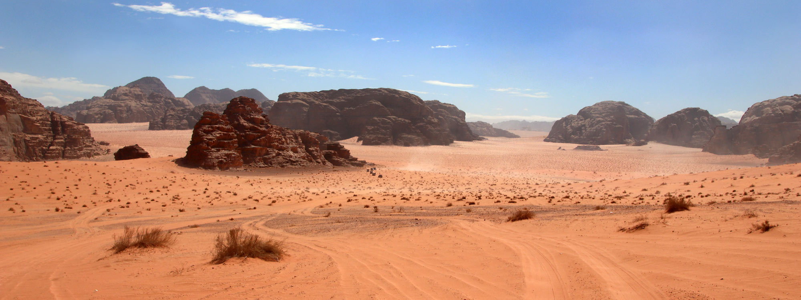The 74,000-hectare complex, designated as a mixed natural and cultural resource, is located in southern Jordan, close to the Saudi border. It has a diverse desert terrain with small gorges, natural arches, high cliffs, ramps, large landslides, and caverns. This site's petroglyphs, inscriptions, and archeological remnants attest to 12,000 years of human occupancy and interaction with the natural environment. The 25,000 rock carvings including 20,000 inscriptions trace the progression of human cognition and the early development of the alphabet. The site depicts the growth of such a region's pastoral, agricultural, and urban activity.
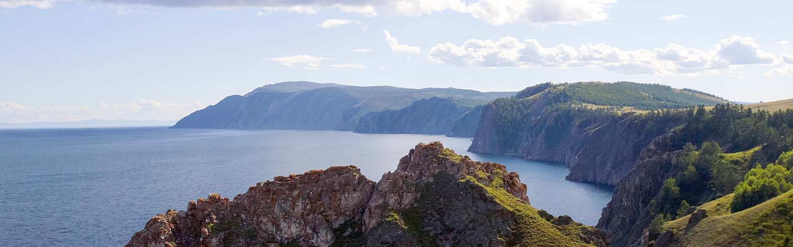Lake Baikal, Russian Ozero Baykal, often written Ozero Bajkal, lake in southern eastern Siberia inside the republic of Buryatia and the Russian oblast of Irkutsk. It is the world's oldest freshwater lake and the deepest continental body of water, with a maximum depth of 5,315 feet. It has a total size of 12,200 square miles, a length of 395 miles, and an average width of 30 miles. It is also the world's biggest freshwater lake in terms of volume, comprising almost one-fifth of the freshwater on Earth's surface, or 5,500 cubic miles. More than 330 rivers and streams pour into Lake Baikal, the greatest of which are the Selenga, Barguzin, Upper (Verkhnyaya) Angara, Chikoy, and Uda.
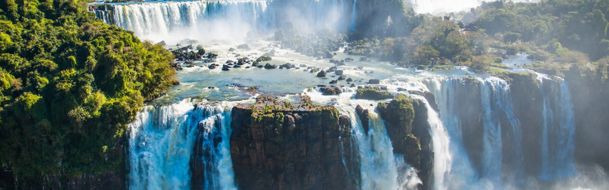Iguaz Falls, also known as Iguaçu Falls, are waterfalls upon that Iguazu River that form the border between Argentina's Misiones province and Brazil's Parana state. Whenever they are united, they constitute the world's greatest waterfall. The falls divide the Iguazu River into two sections: upper and lower Iguazu. The Iguazu River begins in the heart of Curitiba. Although the bulk of the falls are on the Argentine side, the river runs through Brazil for the rest of its course. Below its confluence with the San Antonio River, the Iguazu River forms the boundary between Argentina and Brazil.
The name Iguaz is derived from the Guarani or Tupi words "y," which means "water," and "ûas," which means "large." As shown by legend, a divinity wanted to marry a lovely woman named Naip, who fled on a boat with her human lover Taroba. The deity slashed down river in a fit of fury, resulting in the waterfalls and damning the lovers to an endless fall. The Spanish Conquistador lvar Nez Cabeza de Vaca was the first European to document the presence of the waterfall in 1541.
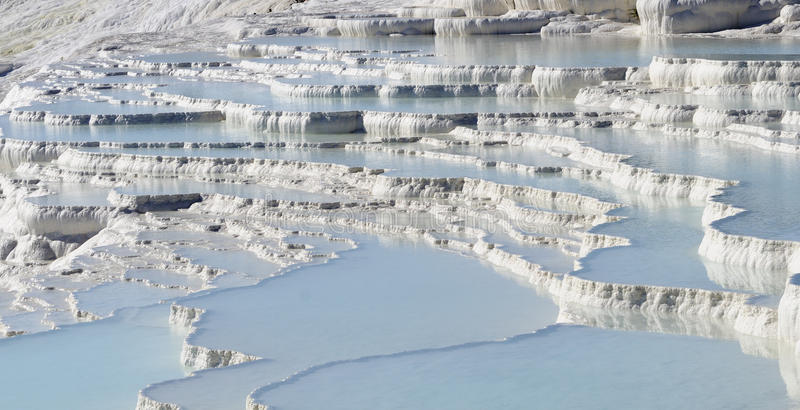Pamukkale, which translates as "cotton castle" in Turkish, is a natural location in Denizli Province in southern Turkey noted for mineral-rich hot waters that cascade down white travertine terraces on a neighboring hillside. It is located next to Hierapolis, a historic Roman spa city built in 190 B.C. A well-preserved theater and a necropolis with sarcophagi that stretch for 2km are among the ruins there. The Antique Pool is well-known for its sunken Roman columns, which were caused by an earthquake.
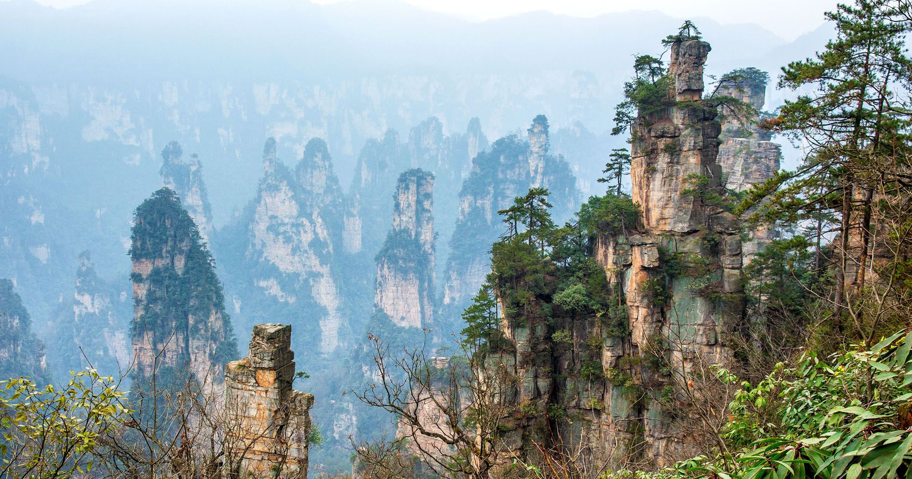Zhangjiajie National Park is located in China's central-eastern region, within the Wulingyuan Scenic Area, which comprises several protected areas. The national park is 18.59 square miles in size. The park is enveloped by dense woods, steep ravines, deep gorges, peculiar peaks, caverns, and pillar-like rock formations. The park is famous worldwide mostly for pillar rock formations. The pillar rock formations are unlike typical eroded limestone pillars. The pillar rock formations are made of quartz-sandstone and created as a result of physical erosion induced by heavy rainfall. The sceneries generated by mountains, pillar rock formations, lush woods, and clouds are the pinnacle of Chinese landscapes that inspire a wide range of artwork.
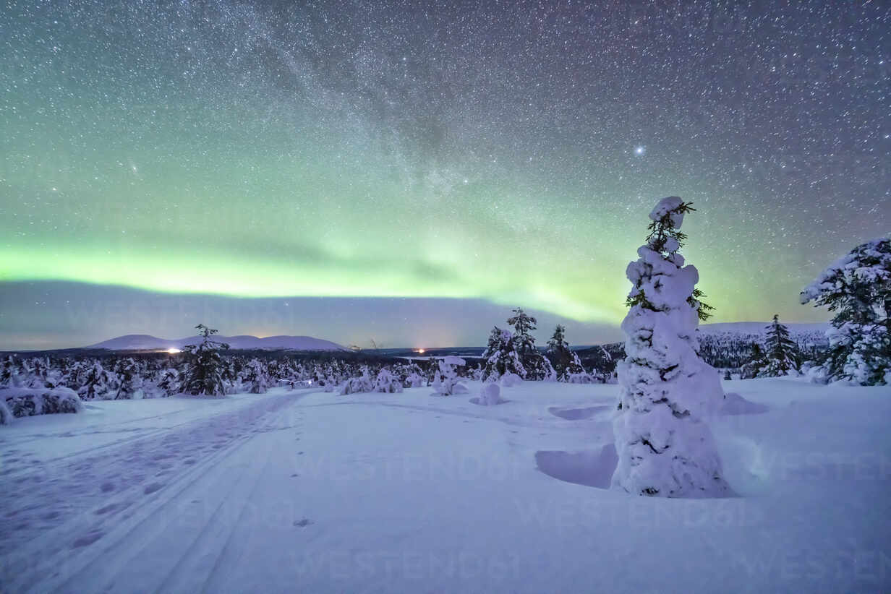The Northern Lights have become a tourist attraction for visitors to the Northern Hemisphere. The Northern Lights are auroras, which are naturally occurring phenomena that consist of enigmatic displays of light in the sky. The northern lights float over the sky, emitting a diffused glow along the northern horizon.
The intensity of anything resembling the northern lights increases as one travels north towards the magnetic pole in the Arctic. Unfortunately, the northern lights appear at random, making them difficult to see on a quick journey. Locals in such northern areas are more likely to come upon them. Viewing the Northern Lights is especially popular in Canada's far north, Alaska, Iceland, Norway, Sweden, and Finland. Seeing the Northern Lights becomes much likely throughout the winter months. They occur all year, but the darker skies of winter make them more visible.
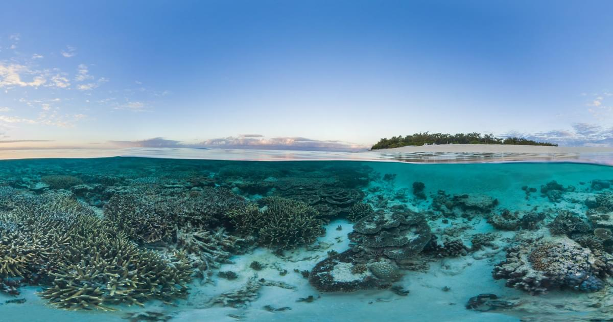The Barrier Reef, the world's biggest coral reef, is made up of about 900 islands and more than three thousand different reefs, and it supports a complex ecology. Visitors may experience the reef up close and personal on boat cruises. Snorkeling and diving expeditions may be organized, allowing you to observe a variety of colorful fish, coral, and marine life. Tours might be single-day expeditions or multi-day excursions.
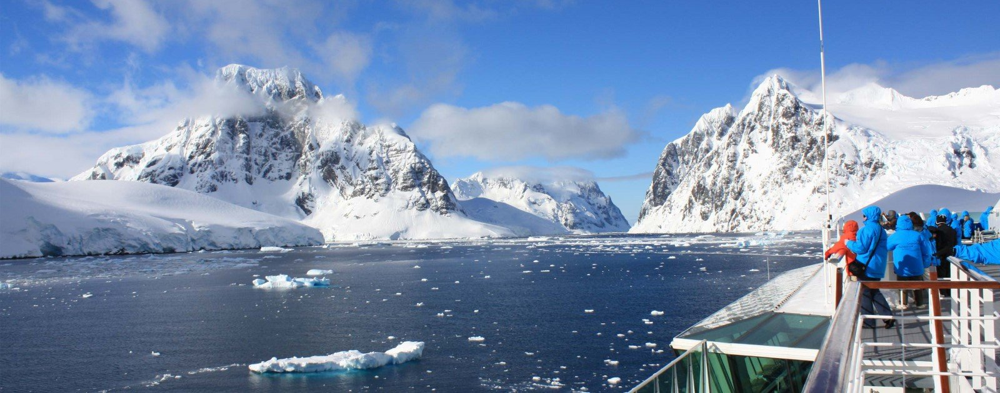Antarctica, the world's northernmost continent, offers a once-in-a-lifetime experience across frozen landscapes, a sight seldom seen elsewhere on the earth. A diverse diversity of arctic species may be found in the snowy environment. The breathtaking scenery is nothing short of breathtaking to see. As a result, glaciers, icebergs, and steep cliffs dominate the terrain above the water in the Lemaire Channel. These majestic structures are home to humpback whales and behemoths. On your way through this lovely site, keep an eye out for orcas. The canal is particularly perilous due to its narrowness of 1600m and the presence of loose icebergs. .Antarctica is quite a photographer's paradise; the scenery gives a stunning mirror perspective that is almost surreal.
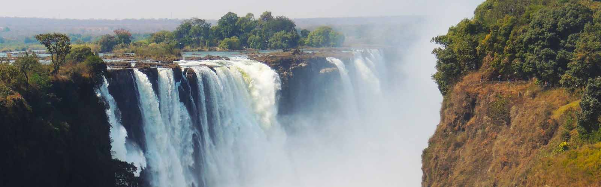Victoria Falls is located in Africa, between Zambia and Zimbabwe. This majestic waterfall is nourished by the Zambezi River. The falls are accessible from Victoria Falls in Zimbabwe and Livingston in Zambia. Cross the border to see this stunning natural beauty from a fresh angle. Its finest views are in Zimbabwe, although you may get a closer look in Zambia. Helicopter and microlight trips are also excellent ways to observe the falls.
From late November through early April, the annual rainfall varies. A nice time to visit is right after this, when the amount of water flowing over the falls is still enormous but the weather is comfortable.
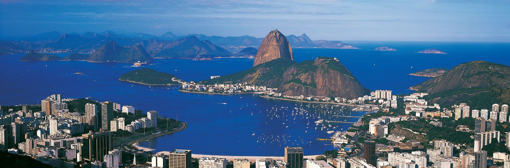Rio de Janeiro's bay is surrounded by granite mountains and pinnacles such as Sugar Loaf Mountain, Corcovada Peak, and the Tijuca Hills. It was developed as a consequence of erosion caused by the Atlantic Ocean. Tourists may take a helicopter ride above Rio de Janeiro's bay for a beautiful aerial view.
Traveling to the topmost location surrounding the granite peaks that overlook the bay would be the usual approach to observe these unique features. This will give panoramic views of the harbor's pristine beaches.
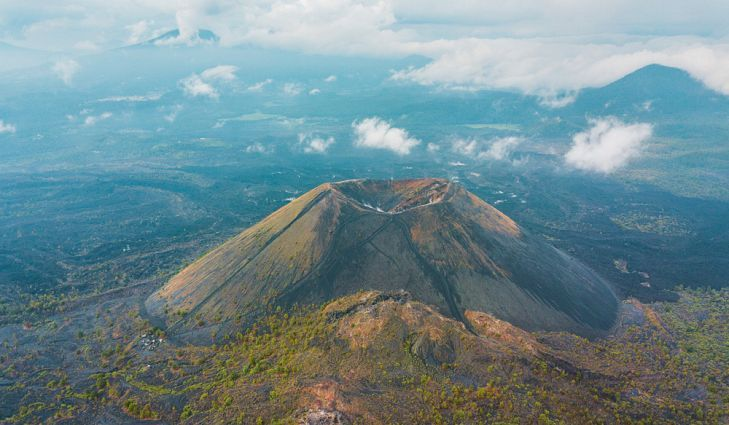Even seasoned travelers may be unaware of Paricutin, owing to its location in Michoacan, Mexico. This cinder cone volcano was declared one of the world's seven natural wonders, surpassing well-known volcanoes such as Yellowstone. The last time Paricutin erupted was in 1952. It was dubbed one of the world's natural beauties since people watched its birth and quick growth. A twelve-mile round-trip hike and perhaps even horse ride to the volcano's top is possible. Hikers will traverse sandy banks and lava fields as they make their way around the volcano.
@ 2022 Silawan, John Kenneth C. | Introduction to Computing Batch 2 | Website Project | Beautiful Wonders of The World | No Copyright Infringement Intended - All rights reserve to the Righful Owners